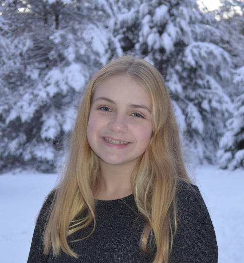

Kara Walp
Hi! I'm Kara, and this is my professional portfolio. With a background in biomedical and electrical engineering, I value interdisciplinary research. Please explore my background, experience, and projects!
This site is a work-in-progress, just like all good science :)

My Expertise
Biomedical Engineering
Electrical Engineering
Computational Biology
Microfluidics
Machine Learning
Synthetic Biology
Technical Skills
“Driven by curiosity, powered by code, grounded in biology.”